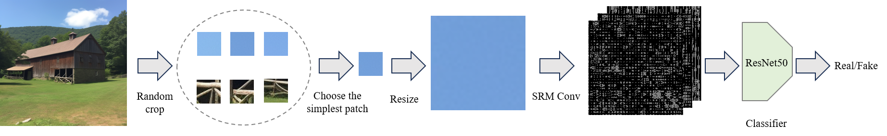

Enhancing AI-Generated Image Detection with Smarter Patch Selection

The Single Simple Patch (SSP) method, introduced in the paper "A Single Simple Patch is All You Need for AI-generated Image Detection", represents a novel approach to detecting AI-generated images. The original implementation uses Spatial Rich Model (SRM) features and a ResNet classifier to analyze image patches for synthetic content detection. The method has shown promising results on the GenImage dataset, which contains images from eight different AI generators including BigGAN, Stable Diffusion v4/v5, VQDM, Wukong, ADM, GLIDE, and Midjourney.
I recently made improvements based on this open-source project's core architecture, addressing some of its limitations.
What's New in My Enhancement?
✅ Top-K Patch Selection Instead of Random Patches
The original implementation randomly selected a single patch from the image before feeding it through the SRM filters and ResNet classifier. This often led to suboptimal results, especially when critical features were missed.
I replaced the random patch selection mechanism with a Top-K patch selection strategy, which identifies and sends the most informative patches to the classifier based on a scoring mechanism. This increases robustness and helps the model focus on areas with the highest potential signal.
✅ Multi-Patch Support
Previously, the system supported only a single patch per image for classification.
Now, you can send multiple top-K patches (configurable) to the ResNet classifier. This allows the system to leverage more information from various parts of the image, improving overall detection accuracy.
✅ Optional Full Image Classification
In some scenarios, treating the whole image as a signal source is more effective than relying on patches alone.
You can now resize the entire image to 256x256, split it into patches, and run it through the same SRM + ResNet pipeline. This opens up new flexibility depending on the detection task.
How to Use the New Features
# Choose number of top patches to select
--top_k_patches 5
# Path selection strategy (0: top-k min, 1: top-k max, 2: whole image with patches)
--path_selection 2These arguments can be toggled to test different configurations and find what works best for your dataset or detection task. The path selection strategy offers three distinct approaches:
- 0 (Top-K Min): Selects patches with the lowest scores, focusing on areas that might contain subtle artifacts
- 1 (Top-K Max): Selects patches with the highest scores, focusing on areas with the most prominent features
- 2 (Whole Image with Patches): Processes the entire image by splitting it into patches, providing the most comprehensive analysis
Based on my testing, option 2 (whole image with patches) combined with averaging the predictions consistently yields the best results, as it captures both local and global features of the image.
Technical Implementation Details
The enhanced implementation maintains compatibility with the original project's environment setup. The system requires Python and can be set up using the provided requirements.txt file. The core components include:
- SRM Feature Extraction: Processes image patches to extract rich spatial features
- ResNet50 Classifier: A deep learning model trained to distinguish between AI-generated and natural images
- Patch Processing Pipeline: Enhanced with intelligent patch selection and multi-patch support
- Improved Preprocessing: Modified the original preprocessing pipeline to better handle image normalization and patch extraction, resulting in more consistent feature representation
- Vectorized Scoring Function: Implemented a fast, vectorized scoring mechanism that efficiently processes multiple patches, significantly reducing computation time when dealing with large numbers of patches
Code Optimization: Vectorized Patch Scoring
The original implementation processed patches one at a time, which became a bottleneck when dealing with multiple patches. Here's how the scoring function was optimized:
Original implementation (processing one patch at a time):
def compute(patch):
weight, height = patch.size
m = weight
res = 0
patch = np.array(patch).astype(np.int64)
diff_horizontal = np.sum(np.abs(patch[:, :-1, :] - patch[:, 1:, :]))
diff_vertical = np.sum(np.abs(patch[:-1, :, :] - patch[1:, :, :]))
diff_diagonal = np.sum(np.abs(patch[:-1, :-1, :] - patch[1:, 1:, :]))
diff_diagonal += np.sum(np.abs(patch[1:, :-1, :] - patch[:-1, 1:, :]))
res = diff_horizontal + diff_vertical + diff_diagonal
return res.sum()Optimized vectorized implementation (processing multiple patches in parallel):
def fast_compute(patches):
# patches: (B, C, H, W)
B, C, H, W = patches.shape
# Compute differences
diff_horizontal = torch.abs(patches[:, :, :, :-1] - patches[:, :, :, 1:]) # (B, C, H, W-1)
diff_vertical = torch.abs(patches[:, :, :-1, :] - patches[:, :, 1:, :]) # (B, C, H-1, W)
diff_diag1 = torch.abs(patches[:, :, :-1, :-1] - patches[:, :, 1:, 1:]) # (B, C, H-1, W-1)
diff_diag2 = torch.abs(patches[:, :, 1:, :-1] - patches[:, :, :-1, 1:]) # (B, C, H-1, W-1)
# Sum all differences
res = (
diff_horizontal.sum(dim=(1, 2, 3)) +
diff_vertical.sum(dim=(1, 2, 3)) +
diff_diag1.sum(dim=(1, 2, 3)) +
diff_diag2.sum(dim=(1, 2, 3))
)
return res # shape: (B,)
Key improvements in the optimized version introduces several key enhancements that boost both performance and efficiency. It employs batch processing to handle multiple patches simultaneously using PyTorch tensors and fully vectorized operations. While preserving the original mathematical logic, the implementation achieves greater memory efficiency. Additionally, it leverages GPU acceleration when available and reduces overhead by eliminating redundant Python-level operations and unnecessary NumPy conversions.
The optimized version is particularly beneficial when using the whole-image approach (path_selection=2), as it efficiently handles the increased number of patches without compromising performance.
The system can be trained and validated using the provided train_val.sh script, and tested using test.sh. The model supports both single-patch and multi-patch configurations, allowing for flexible deployment based on specific use cases. The vectorized scoring function is particularly beneficial when using the whole-image approach (path_selection=2), as it efficiently handles the increased number of patches without compromising performance.
Performance Considerations
The enhanced version maintains the efficiency of the original SSP method while providing more robust detection capabilities. The Top-K patch selection strategy adds minimal computational overhead while significantly improving detection accuracy, especially for complex images where critical features might be distributed across multiple regions.
For optimal performance, users can experiment with different values of K (number of patches) and decide whether to use the full-image processing option based on their specific requirements and computational resources.
💡 Personal Finding
Through extensive testing, I found that averaging the predictions from all patches and sending them to the detector consistently yields the best results. This approach helps capture a more comprehensive view of the image's characteristics and reduces the impact of any single patch's potential misclassification.
Why It Matters
AI-generated content is getting harder to detect as generation models improve. By shifting from random sampling to intelligent selection and expanding the input strategy, we empower the detector to catch subtle generative artifacts with greater confidence.
If you're working in media forensics, AI content regulation, or deepfake detection, I invite you to explore the enhanced version and share feedback.
Back to Blog